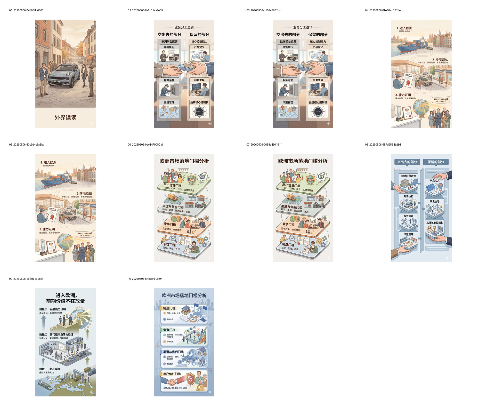
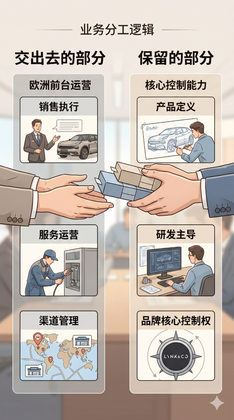
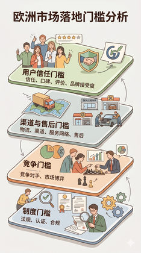
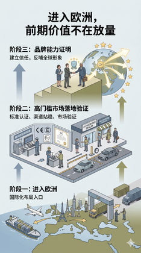

G00 · 初始两套视觉参考（W/H）
识别第二层美观与第一层结构表达应分离，并形成 W/H 参考起点。

Images

02. 2）W_LYNK3｜对照逻辑图｜交出去的部分 vs 保留的部分(3).png

03. 2）W_LYNK3｜对照逻辑图｜交出去的部分 vs 保留的部分(4).png

04. 3）W_LYNK4｜阶段价值链图｜进入欧洲 → 高门槛市场落地验证 → 品牌能力证明(3).png

05. 3）W_LYNK4｜阶段价值链图｜进入欧洲 → 高门槛市场落地验证 → 品牌能力证明(4).png

06. 4）W_LYNK7｜拆解清单图｜欧洲市场落地门槛分析(3).png

07. 4）W_LYNK7｜拆解清单图｜欧洲市场落地门槛分析(4).png

08. 6）H_LYNK3｜对照逻辑图｜交出去的部分 vs 保留的部分(2).png

09. 7）H_LYNK4｜阶段价值链图｜进入欧洲 → 高门槛市场落地验证 → 品牌能力证明(2).png